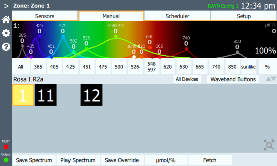

Zones > Manual
This tab shows a diagram of the spectrum of the selected device and a grid containing device buttons for the zone (see Settings > Devices). The screen is in two parts, upper and lower, separated by a horizontal bar containing the selected device’s name and some controls described below. Move the horizontal bar up and down to suit your display layout by selecting and dragging the up and down arrows on the right hand side of the bar.
The spectrum will display the controllable wavebands of the selected device (or multiple devices when all selected devices are of the same type). The spectrum can be adjusted in various ways (see Set Values below). Values default to percentage values, but if calibrated lights are being used, μmol values may be displayed instead (see Manual > µmol/%). If more space is needed on the screen, select the Waveband Buttons to toggle them on or off.

Additional broad waveband data can be enabled in iPreferences > Color Ranges.
The device grid may be zoomed and moved by using two fingers to pinch or pan. When devices are magnified, they show their name, a color simulation and spectrum content; when their size is reduced, the spectrum and name will disappear.
Note: The spectrum shown in a device box in the lower section is not a spectral graph but a set of bars showing the relative control levels for each waveband.
Relay devices are shown in black (off) or white (on).
If the global layout has been enabled for your system, arrangement of devices must be done in Settings > Layout.
Configure Device Grid
As devices are connected to RAYN Syrcadia in Settings > Devices, they are placed as buttons onto a grid displayed in the Manual and Scheduler tabs. These buttons are used to select and deselect devices in the zone, and to mimic each device's output. The grid will also determine the arrangement of the status icons for each device in the zone status tile on the home screen.
Devices can be arranged within the grid to suit the needs of the zone. This may be to more closely match the configuration of the zone, or to simplify selection or display of devices of different types.
To move a device within the grid, select and hold the desired device button until the grid appears, then drag the device button to a new position. When the device is in place, release your hold and the grid will disappear.
Select Devices
Select a device in the lower section. Selected devices are shown surrounded by a yellow box. Select a device again to deselect it. Select additional devices to add them to the selection. Select All Devices to select all devices controllable by RAYN Syrcadia. Double-tap a device to deselect all other devices.
Select devices one at a time or in groups to set values using the spectrum controls.
Note: The spectrum will display the controllable wavebands of multiple devices when all selected devices are of the same type. Dissimilar type selections will only allow intensity control.
Set Values
The wavebands can be controlled in several ways:
- Select a waveband button and then swipe up or down in the spectrum above the button to adjust the level.
- To select multiple wavebands, press All, then deselect the unwanted wavebands. The remaining selected wavebands can be controlled together by swiping in the spectrum above the buttons. Individual control is available by swiping from the waveband button. Performing an individual adjustment removes that waveband from the group selection.
- Select and hold a waveband button and swipe up or down to adjust the level.
- Double-select a waveband button to open the keypad to enter a specific percentage value.
Adjust the overall intensity of the selected device(s) by selecting and swiping the % button at the right end of the waveband buttons.
Once the system is configured, these settings can be stored to a recorded spectrum that can be used in day plans or to a recorded override state that can be triggered manually.
- To record a spectrum, see Manual > Save Spectrum.
- To record an override, see Manual > Save Override.
- To activate a previously recorded spectrum, see Manual > Play Spectrum.